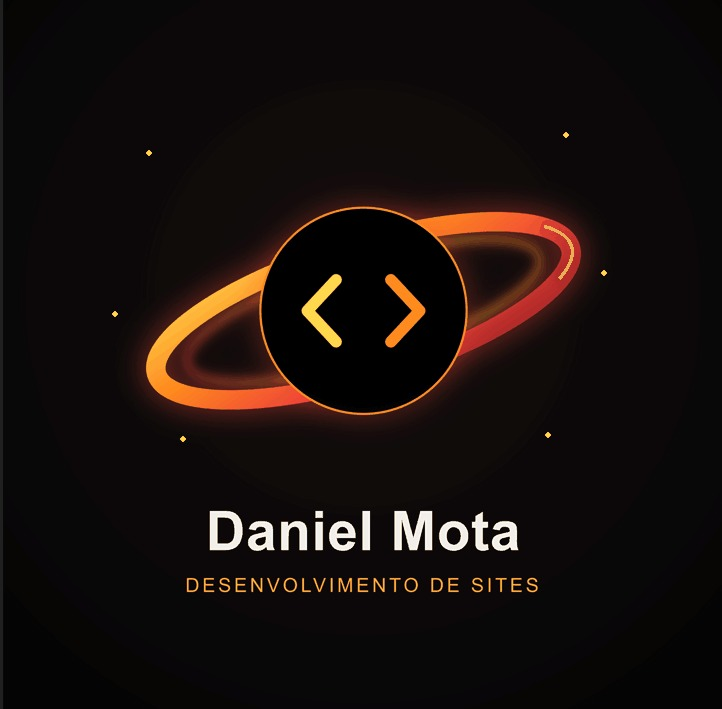

Mais credibilidade
Apresente sua empresa com uma imagem profissional e coerente com a qualidade do seu trabalho.
Crio sites e landing pages que apresentam seu trabalho com clareza, passam confiança e facilitam o próximo passo do cliente.
Uma presença digital organizada ajuda as pessoas a entenderem o que você faz, por que escolher você e como entrar em contato.
Apresente sua empresa com uma imagem profissional e coerente com a qualidade do seu trabalho.
Organize serviços, diferenciais e informações importantes em uma página fácil de entender.
Seu conteúdo se adapta a diferentes telas para que o visitante navegue com conforto.
Chamadas para ação ajudam a direcionar o visitante para orçamento, agendamento ou contato.
O projeto começa pela necessidade do seu negócio. A partir dela, definimos a estrutura, o conteúdo e o caminho mais adequado.
Uma página direta para apresentar uma oferta, serviço ou campanha e conduzir o visitante a uma ação.
Uma presença online para explicar quem você é, o que oferece e como as pessoas podem encontrar sua empresa.
Uma nova organização visual e de conteúdo para deixar uma página existente mais atual, clara e simples de navegar.
Projeto em destaque: MotaLab Clínica — site para apresentar a clínica, seus serviços e o Cartão MotaLab.
Você acompanha as decisões e sabe o que vem em cada etapa do desenvolvimento.
Conte sua ideiaConversamos sobre seu negócio, seu público e o que o site precisa alcançar.
Organizamos as informações para que a mensagem seja clara e a navegação faça sentido.
Transformo a estrutura em uma experiência visual responsiva, alinhada à sua marca.
Revisamos o resultado juntos e alinhamos os próximos passos para publicar seu site.

Ajudo empresas e profissionais a apresentarem seu trabalho na internet com sites organizados, modernos e fáceis de navegar.
Acredito que um bom site une uma mensagem clara, um visual cuidadoso e uma experiência que respeita o tempo de quem visita.
Vamos tirar sua ideia do papelUm projeto bem alinhado começa com expectativas claras.
Uma conversa sobre seu negócio e seus objetivos já é um ótimo começo. Depois alinhamos conteúdo, referências, identidade visual e materiais disponíveis.
Sim. A experiência é planejada para se adaptar a diferentes tamanhos de tela e facilitar a navegação em cada dispositivo.
Sim. As etapas incluem momentos de revisão para que possamos avaliar o trabalho e alinhar ajustes em conjunto.
O prazo e o investimento dependem do escopo, do conteúdo e das funcionalidades. Após entender sua necessidade, preparo uma proposta específica.
Conte um pouco sobre sua ideia. A gente conversa sobre os objetivos e encontra um bom caminho para o projeto.
WhatsApp: (83) 8903-8017 · danielmotaita@gmail.com